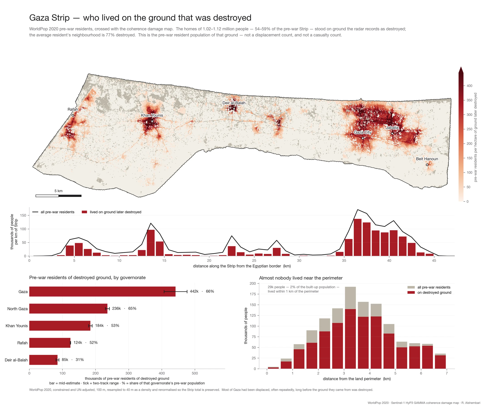

Highlights
A growing set of research notes. New entries are added as projects reach a point worth sharing.

2026 · Remote sensing · Satellite radar
Mapping the destruction of the Gaza Strip with satellite radar
Interferometric radar coherence from Copernicus Sentinel-1, measured twice from independent viewing geometries, is used to map how much of the Strip's built environment was physically destroyed between October 2023 and mid-2026 — how much, where, and when.
Read the highlight →